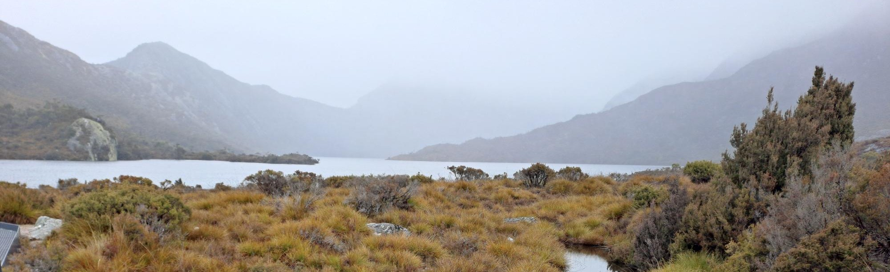
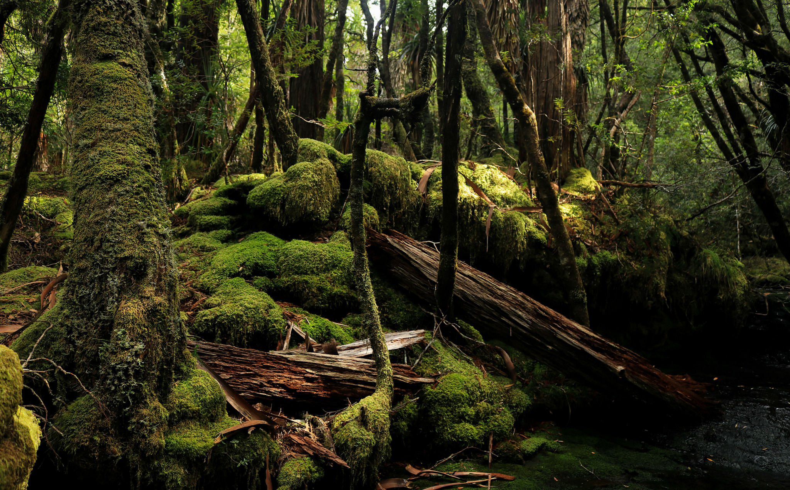
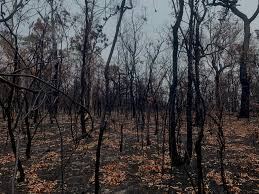
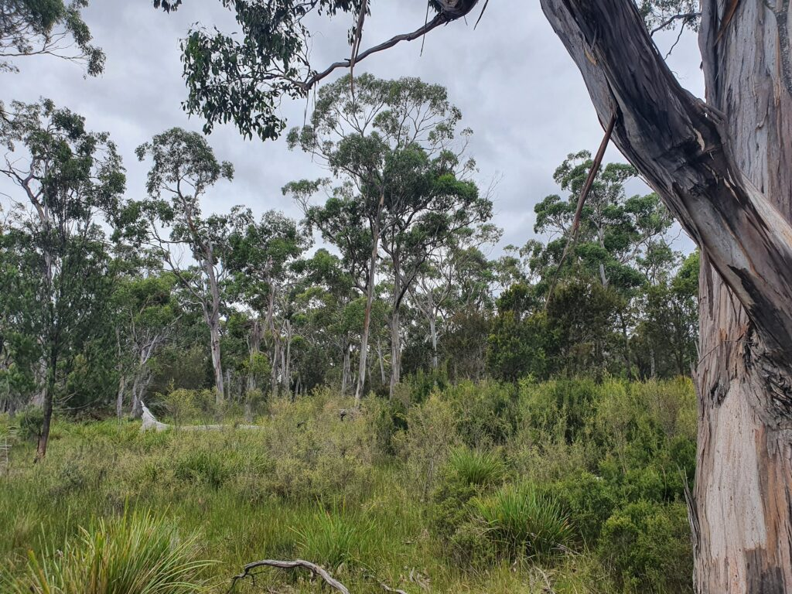
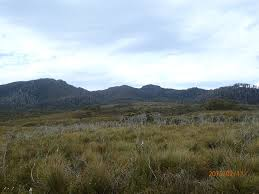
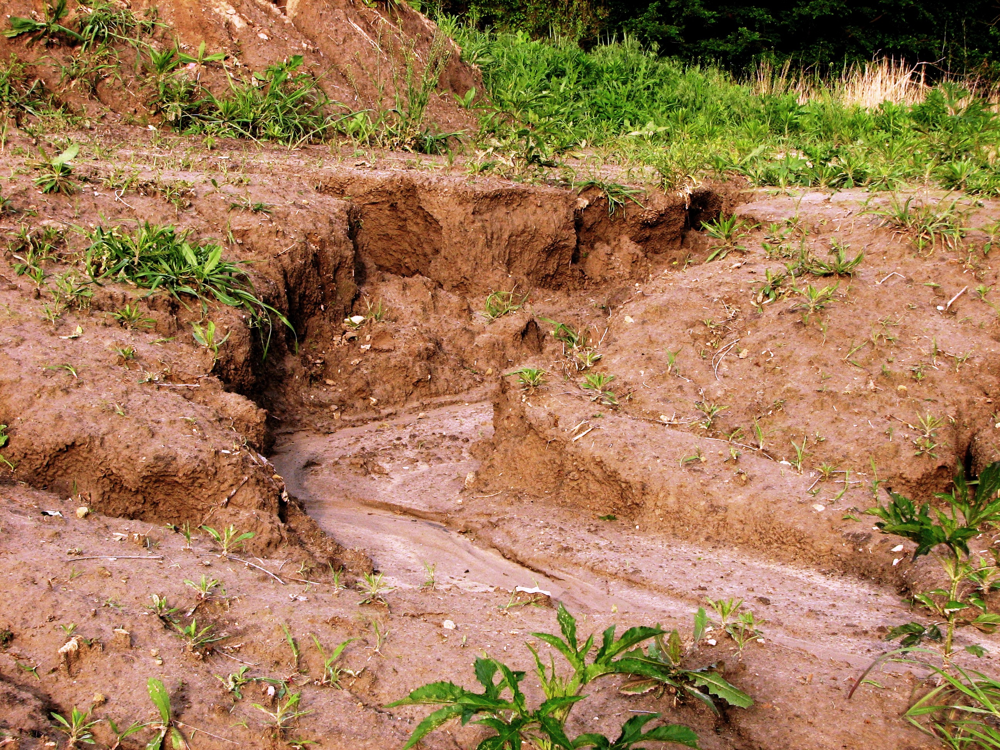
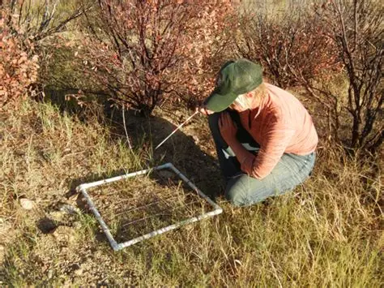

Introduction to Tasmanian Ecosystems
Welcome to the Tasmanian Ecosystem Maintenance training module. This program is designed to provide you with the knowledge and skills needed to work effectively in conservation and ecosystem management across Tasmania's unique environments.
Tasmania's ecosystems range from coastal heathlands to alpine moorlands, each with distinct conservation challenges. As a conservation worker, you'll play a vital role in maintaining these ecosystems for future generations.
Why Tasmania is Special
- Home to ancient Gondwanan species like the myrtle beech Nothofagus cunninghamii, a Gondwanan relic species
- Contains some of the most intact temperate rainforests in the world
- Unique alpine ecosystems found nowhere else
- Critical habitat for endangered species like the Tasmanian devil
Key Ecological Concepts
Biodiversity
Tasmania's biodiversity is supported by its isolation and varied landscapes. Maintaining species diversity ensures ecosystem resilience.
Disturbance Cycles
Natural disturbances like fire and flood shape ecosystems. Understanding these cycles helps us manage human impacts.
Ecological Succession
How ecosystems recover after disturbance. Knowing succession patterns helps guide restoration efforts.
Threats to Tasmanian Ecosystems
- Invasive species: Gorse, foxes, and phytophthora (dieback Plant disease caused by pathogens like Phytophthora cinnamomi)
- Climate change: Shifting rainfall patterns and temperatures
- Land use changes: Agriculture, urban expansion, and forestry
- Fragmentation: Isolated habitat patches
Tasmanian Case Studies
Tasman Peninsula Restoration

Coastal heath restoration after agricultural abandonment. Key techniques included:
- Gorse removal
- Native species reintroduction
- Erosion control
Project Overview:
The Tasman Peninsula Restoration Project was initiated in 2015 to restore coastal heathland ecosystems that had been degraded by historical agricultural practices. The project area covers approximately 200 hectares of previously cleared land.
Key Achievements:
- Removed gorse from 95% of the target area through a combination of mechanical removal and targeted herbicide application
- Reintroduced 15 native plant species that had been locally extinct
- Stabilized erosion on 3km of coastal slopes using native vegetation and jute matting
- Documented return of 5 native bird species to the area
Lessons Learned:
Early community engagement was critical to the project's success. Local volunteers contributed over 2,000 hours to planting and maintenance activities. The project also demonstrated the importance of ongoing maintenance, as initial gorse removal required follow-up treatments for resprouting plants.
Monitoring Results:
Annual monitoring shows native vegetation cover has increased from 15% to 65% over 5 years. Soil stability tests indicate a 40% reduction in erosion rates. Bird surveys document increased diversity, with several threatened species now regularly nesting in the restored areas.
Central Plateau Moorlands
Managing peatlands affected by altered fire regimes and climate change. Interventions:
- Modified burning practices
- Visitor management
- Hydrology restoration
Project Overview:
The Central Plateau Moorlands Conservation Initiative addresses degradation of Tasmania's unique alpine peatlands. These ecosystems have been impacted by changed fire regimes, climate change, and visitor pressure.
Key Interventions:
- Implemented a modified burning regime that mimics natural fire cycles more closely
- Constructed boardwalks and designated paths to limit visitor impact on sensitive areas
- Installed water retention structures to restore natural hydrology in drained areas
- Conducted community education programs about moorland conservation
Ecological Outcomes:
Monitoring shows improved water retention in treated areas, with water tables rising by an average of 15cm. Vegetation surveys indicate recovery of sensitive sphagnum moss species. Fire management changes have reduced the frequency of large, catastrophic fires while maintaining the ecological benefits of appropriate fire regimes.
Challenges:
Climate change continues to pose a significant threat, with changing precipitation patterns affecting water availability. Ongoing visitor education remains necessary to minimize human impact. The remote location of many areas makes monitoring and maintenance logistically challenging.
North-East Invasive Control

Community-led program to control gorse (Ulex europaeus) invasion. Outcomes:
- 80% reduction in target areas
- Improved pasture quality
- Native species recovery
Project Overview:
The North-East Gorse Control Program is a community-led initiative that began in 2018 to address the significant impact of gorse invasion on agricultural land and native ecosystems in Tasmania's north-east region.
Approach:
- Implemented a coordinated, landscape-scale approach across multiple properties
- Used cut-stump herbicide application as the primary control method
- Followed up with revegetation using native species and improved pasture grasses
- Established a monitoring network to track regrowth and treatment effectiveness
Results:
The program has achieved an 80% reduction in gorse cover across 1,500 hectares of treated land. Agricultural productivity has improved, with pasture quality increasing by 40% on average. Native vegetation has begun to recover in areas where gorse has been removed, with 12 native plant species returning without active reintroduction.
Community Engagement:
The program's success is largely due to strong community involvement. Over 50 landholders participated in the coordinated control effort. Regular field days and workshops facilitated knowledge sharing and maintained momentum. The program received funding from both government grants and local contributions, demonstrating community commitment to the initiative.
Field Techniques for Ecosystem Maintenance
Essential Skills for CIII CEM
Weed Control

Effective techniques for common Tasmanian weeds:
- Gorse: Cut-stump herbicide application
- Pampas grass: Foliar spray herbicide application
- Ragwort: Biological control
Erosion Management
Preventing and repairing soil loss:
- Jute matting on slopes
- Revegetation strategies
- Drainage control
Monitoring Methods
Tracking ecosystem health:
- Photo points
- Vegetation transects
- Fauna surveys
Field Kit Checklist
Restoration Planner Simulation
Adjust the variables below to see how different approaches affect restoration outcomes in a Tasmanian dry sclerophyll forest.
Restoration Variables
Simulation Results
Adjust the variables and run the simulation to see results.
Knowledge Check
Test your understanding of Tasmanian ecosystem maintenance concepts.
1. What is the most effective method for controlling gorse in Tasmania?
2. Which of these is NOT a key threat to Tasmanian moorlands?
3. What is the first stage of ecological succession after a severe fire in dry sclerophyll forest?
Additional Resources
Glossary of Terms
- Dieback
- The gradual deterioration of health in trees or plants, often caused by pathogens like Phytophthora.
- Ecological Succession
- The process of change in the species structure of an ecological community over time.
- Fire Regime
- The pattern, frequency, and intensity of the fires that prevail in an area over long periods.
- Gondwanan Species
- Plants and animals whose evolutionary history traces back to when Tasmania was part of the supercontinent Gondwana.
Further Reading
- Tasmanian Land Conservancy publications
- DPIPWE conservation guidelines
- Bushcare and Landcare Tasmania resources